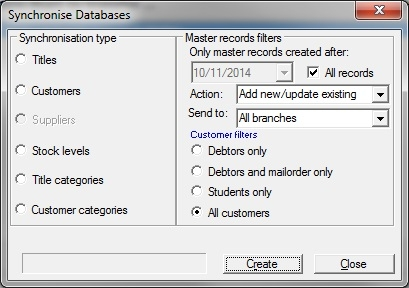
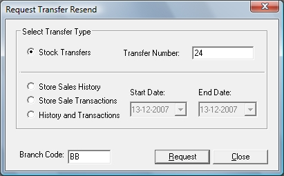

See below,

|
e-Comms Operation
|
Previous Top Next |
| · | Email and EDI transaction advices to Customers and Suppliers.
|
| · | Inter-store data.
|
| · | Synchronisation's request resends.
|
| · | Nielsen Bookscan.
|


| · | Stock transfers
|